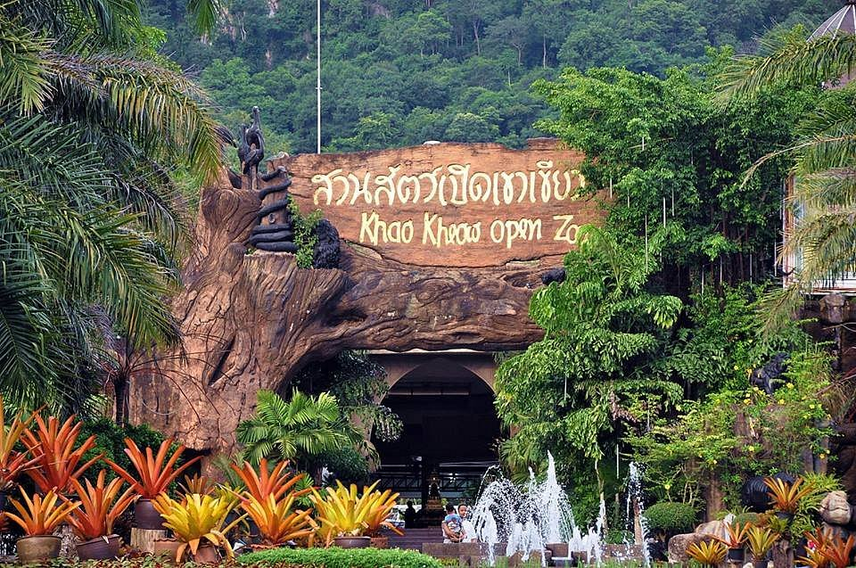

สวนสัตว์เปิดเขาเขียว
สวนสัตว์เปิดเขาเขียว ตั้งอยู่ที่ ตำบลบางพระ อำเภอศรีราชา จังหวัดชลบุรี เป็นสวนสัตว์เปิดขนาดใหญ่ในจังหวัดชลบุรี สวนสัตว์เป็นบริการสาธารณะ ซึ่งรัฐได้ดำเนินการเพื่อให้บริการแก่สังคมและประชาชนด้านต่าง ๆ เป็นสวนสัตว์ที่มีนักท่องเที่ยวชมมากที่สุด